Disassembled Views
Disassembled Views
Case and Associated Parts (1 of 2)
Case and Associated Parts:
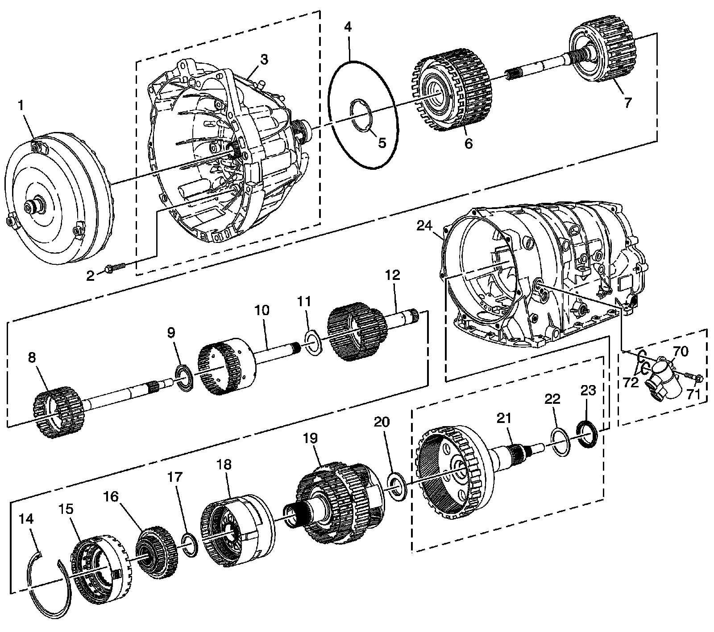
1 - Torque Converter Assembly
2 - Torque Converter Housing to Main Case Bolt
3 - Torque Converter Housing Assembly - Model Dependent
4 - Torque Converter Housing Fluid Seal Assembly
5 - Reverse Clutch Housing Thrust Washer - Selective
6 - Direct and Reverse Clutch Assembly
7 - Forward and Coast Clutch Assembly
8 - Input Sun Gear - W/Forward Clutch Roller Inner Race Shaft
9 - Direct Clutch Hub Thrust Washer
10 - Direct Clutch Assembly- W/Input and Reaction Carrier in Hub
11 - Input and Reaction Carrier Inner Shaft Thrust Washer
12 - Intermediate Clutch Sprag Assembly
14 - Intermediate and Overdrive Clutch Housing Retainer Ring - Selective
15 - Overdrive Clutch Housing Assembly
16 - Low Clutch Sprag Assembly
17 - Low Clutch Roller Thrust Bearing
18 - Center Support
19 - Input and Reaction Carrier Assembly
20 - Input and Reaction Carrier Thrust Bearing
21 - Output Shaft Assembly W/Rear Internal Gear - Model Dependent
22 - Input and Reaction Carrier Washer Selective Steel - Model Dependent
23 - Input and Reaction Carrier Thrust Bearing
24 - Automatic Transmisssion Case Assembly
70 - Transmission Cooler Bypass Valve - Model Dependent
71 - Transmission Cooler Bypass Bolt - Model Dependent
72 - Transmission Cooler Bypass Seals - Model Dependent
Case and Associated Parts (2 of 2)

24 - Automatic Transmission Case Assembly
25 - Automatic Transmission Case Extension Gasket - Model Dependent
25 - Automatic Transmission Case Extension Gasket - Model Dependent
26 - Output Shaft Bearing - Model Dependent
27 - Automatic Transmission Case Extension - Model Dependent
27 - Automatic Transmission Case Extension - Model Dependent
28 - Output Shaft Bearing - Model Dependent
28 - Output Shaft Bearing - Model Dependent
29 - Automatic Transmission Prop Shaft - Model Dependent
30 - Output Shaft Assembly Retainer - Model Dependent
31 - Automatic Transmission Prop Shaft Flange - Model Dependent
32 - Automatic Transmission Prop Shaft Flange - O-Ring Seal - Model Dependent
33 - Automatic Transmission Prop Shaft Thrust Washer - Model Dependent
34 - Prop Shaft Flange Nut - Model Dependent
35 - Automatic Transmission Case Extension Bolt - Model Dependent
35 - Automatic Transmission Case Extension Bolt - Model Dependent
36 - Automatic Transmission Fluid Level Hole Plug
37 - Automatic Transmission Fluid Level Hole Plug O-Ring Seal
38 - Center Support Fluid Passage Sleeve
39 - Overdrive Clutch Fluid Passage Sleeve
40 - Automatic Transmission Pressure Test Plug
42 - Output Speed Sensor
43 - Output Speed Sensor Bolt
44 - Input Speed Sensor
45 - Input Speed Sensor Bolt
46 - Automatic Transmission Fluid Pump Cover Gasket
47 - Control Valve Body and Accumulator Assembly
49 - Control Valve Body Bolt M6 x 1.0 x 50
50 - Control Valve Body Bolt M6 x 1.0 x 38
51 - Control Valve Body Bolt M6 x 1.0 x 50
52 - Manual Shaft Detent Assembly
53 - Control Valve Body Bolt M6 x 1.0 x 68
54 - Wiring Harness Clip
55 - Automatic Transmission Wiring Harness
56 - Automatic Transmission Wiring Harness - O-Ring Seal - 2
57 - Automatic Transmission Filter Seal - 2
59 - Automatic Transmission Fluid Filter
60 - Automatic Transmission Fluid Pan Gasket
61 - Automatic Transmission Fluid Pan Magnet
62 - Automatic Transmission Fluid Pan Assembly
65 - Automatic Transmission Fluid Pan Bolt
66 - Automatic Transmission Pressure Test Plug O-Ring Seal
67 - Input and Reaction Carrier Thrust Washer Selective Plastic - Model Dependent
68 - Automatic Transmission Prop Shaft Flange Seal - Model Dependent
69 - Input and Reaction Carrier Thrust Bearing - Model Dependent
Fluid Pump Assembly
Fluid Pump Assembly:

200 - Reverse Clutch Housing Fluid Seal Ring - 3
201 - Input Shaft Bearing Assembly
202 - Automatic Transmission Fluid Pump Cover Assembly
203 - Check Valve Retainer and Ball Assembly
203 - Check Valve Retainer and Ball Assembly
204 - Valve Bushing/Spring Retainer
204 - Valve Bushing/Spring Retainer
205 - Line Boost Valve Bushing Seal
206 - Line Boost Valve Bushing
207 - Line Boost Valve
208 - Line Boost Valve Spring
209 - Pressure Regulator Valve Spring
210 - Pressure Regulator Valve
211 - Automatic Transmission Fluid Pump Retainer Pin
211 - Automatic Transmission Fluid Pump Retainer Pin
212 - Automatic Transmission Pump Cover Seal
213 - Automatic Transmission Fluid Pump Screen Assembly
214 - Brass Orifice Insert
215 - Turbine Shaft Bushing
216 - Automatic Transmission Fluid Pump Slide - Selective
217 - Automatic Transmission Fluid Pump Slide Seal Support
218 - Automatic Transmission Fluid Pump Slide Seal
219 - Automatic Transmission Fluid Pump Slide Ring
220 - Automatic Transmission Fluid Pump Slide Ring
221 - Automatic Transmission Fluid Pump Vane Ring
222 - Automatic Transmission Fluid Pump Vane
223 - Automatic Transmission Fluid Pump Rotor - Selective
224 - Automatic Transmission Fluid Pump Rotor Guide
225 - Automatic Transmission Fluid Pump Vane Ring
226 - Torque Converter Bushing
227 - Torque Converter Housing
228 - Torque Converter Housing Seal Bolt M4 x 0.7 x 10.0 - 4
229 - Torque Converter Housing Seal
231 - Automatic Transmission Fluid Pump Slide Pin Assembly
232 - Orifice Sleeve
233 - Orifice Cup Plug - 2
233 - Orifice Cup Plug - 2
234 - TCC Control Valve Spring
234 - TCC Control Valve Spring
235 - TCC Control Valve
236 - Automatic Transmission Fluid Pump Retainer Pin
237 - TCC Enable Valve
238 - Pressure Relief Ball Valve Spring
239 - Pressure Relief Ball Valve
240 - Automatic Transmission Fluid Pump Bolt M6 x 1.0 x 40
241 - Automatic Transmission Fluid Pump Bolt M8 x 1.25 x 40
242 - Automatic Transmission Fluid Pump Slide O-ring Seal
Control Valve Body and Accumulator Assembly
Control Valve Body and Accumulator Assembly:

300 - Control Valve Body Bolt M6 x 1.0 x 38 - 7
301 - Control Valve Top Channel Plate
302 - Control Valve Channel Plate Ball Check Spring
303 - Control Valve Channel Plate Gasket
304 - Control Valve Bottom Channel Plate
305 - Control Valve Body Gasket
306 - Control Valve Body Ball Check Valve
307 - Control Valve Body Spacer Plate
308 - TCC PWM Solenoid Valve Filter Assembly
309 - Control Valve Body Spacer Plate Gasket
310 - Control Valve Rear Body Assembly
311 - Control Valve Front Body Assembly
312 - Pressure Control Solenoid Valve Filter Assembly
313 - Direct Clutch Accumulator Piston Spring - Model Dependent
314 - Direct Clutch Accumulator Piston Fluid Seal Ring - Model Dependent
315 - Direct Clutch Accumulator Piston - Model Dependent
316 - Direct Clutch Accumulator Piston Fluid Seal Ring - Model Dependent
317 - Direct Clutch Accumulator Housing - Model Dependent
318 - Accumulator Housing Bolt M6 x 1.0 x 30 - 12 - Model Dependent
318 - Accumulator Housing Bolt M6 x 1.0 x 30 - 12
318 - Accumulator Housing Bolt M6 x 1.0 x 30 - 12
318 - Accumulator Housing Bolt M6 x 1.0 x 30 - 12
319 - Overdrive Clutch Accumulator Piston Spring
320 - Overdrive Clutch Accumulator Piston Fluid Seal Ring
321 - Overdrive Clutch Accumulator Piston
322 - Overdrive Clutch Accumulator Piston Fluid Seal Ring
323 - Overdrive Clutch Accumulator Housing
324 - Intermediate Clutch Accumulator Piston Spring
325 - Intermediate Clutch Accumulator Piston Fluid Seal Ring
326 - Intermediate Clutch Accumulator Piston
327 - Intermediate Clutch Accumulator Piston Fluid Seal Ring
328 - Intermediate Clutch Accumulator Housing
329 - 2nd Clutch Accumulator Piston Spring - Model Dependent
330 - 2nd Clutch Accumulator Piston Seal Ring - Model Dependent
331 - 2nd Clutch Accumulator Piston - Model Dependent
332 - 2nd Clutch Accumulator Piston Seal Ring - Model Dependent
333 - 2nd Clutch Accumulator Housing - Model Dependent
334 - 2nd Clutch Accumulator Piston Inner Spring - Model Dependent
Front Control Valve Body
Front Control Valve Body:
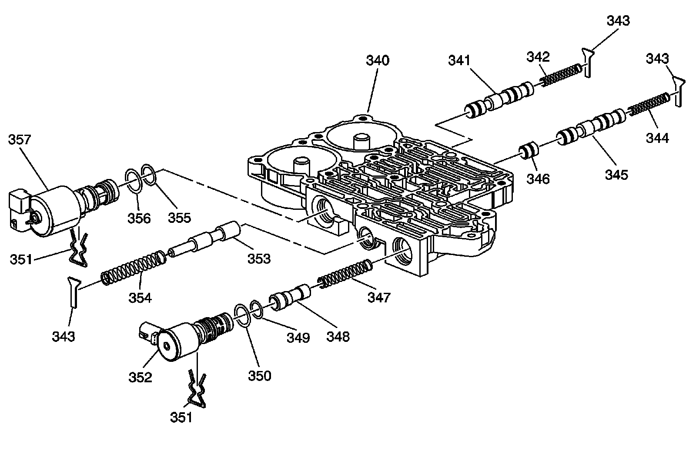
340 - Front Control Valve Body
341 - Safety Mode Valve
342 - Safety Mode Valve Spring
343 - Valve Spring Retainer - 3
343 - Valve Spring Retainer - 3
343 - Valve Spring Retainer - 3
344 - 3-4 Shift Valve Spring
345 - 3-4 Shift Valve
346 - 3-4 Shift Control Valve
347 - TCC Regulator Apply Valve Spring
348 - TCC Regulator Apply Valve
349 - Solenoid Valve - O-Ring Seal
350 - Solenoid Valve - O-Ring Seal
351 - Solenoid Valve Retainer - 2
351 - Solenoid Valve Retainer - 2
352 - TCC PWM Solenoid Valve
353 - Feed Limit Valve
354 - Feed Limit Valve Spring
355 - Pressure Control Solenoid - O-Ring Seal
356 - Pressure Control Solenoid - O-Ring Seal
357 - Pressure Control (PC) Solenoid Assembly
Rear Control Valve Body
Rear Control Valve Body:

343 - Valve Spring Retainer
343 - Valve Spring Retainer
343 - Valve Spring Retainer
349 - Solenoid Valve - O-Ring Seal
349 - Solenoid Valve - O-Ring Seal
349 - Solenoid Valve - O-Ring Seal
350 - Solenoid Valve - O-Ring Seal
350 - Solenoid Valve - O-Ring Seal
350 - Solenoid Valve - O-Ring Seal
351 - Solenoid Valve Retainer
351 - Solenoid Valve Retainer
351 - Solenoid Valve Retainer
365 - Rear Control Valve Body
366 - 1-2 Shift Control Valve
367 - 1-2 Shift Control Valve Spring
368 - 1-2 Shift Solenoid (SS) Valve Assembly
369 - 2-3 Shift Solenoid (SS) Valve Assembly
370 - 2-3 Shift Control Valve
371 - 2-3 Shift Valve
372 - 2-3 Shift Valve Spring
373 - 4-5 Shift Valve Spring
374 - 4-5 Shift Valve
375 - 4-5 Shift Control Valve
376 - 4-5 Shift Solenoid (SS) Valve Assembly
377 - Manual Valve
378 - Manual Valve Link Washer - Waved
379 - Manual Valve Link
380 - Manual Valve Link Retainer
381 - Low Pressure Control Valve Bore Plug
382 - Low Pressure Control Valve Spring
383 - Low Pressure Control Valve
384 - Low Pressure Control Valve Bore Retainer
385 - Reverse Lockout Valve
386 - Reverse Lockout Valve Spring
387 - 1-2 Shift Valve
388 - 1-2 Shift Valve Spring
Direct and Reverse Clutch Assembly
Direct and Reverse Clutch Assembly:
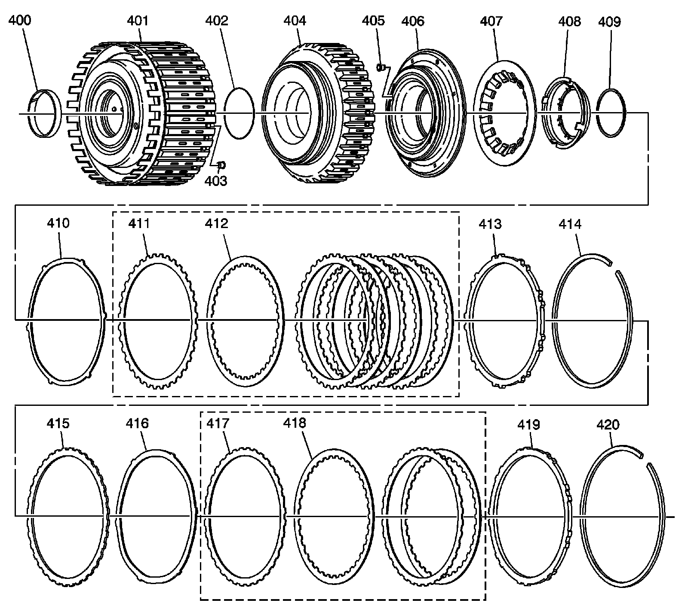
400 - Reverse Clutch Housing Bushing
401 - Reverse Clutch - W/Input Housing Assembly
402 - Reverse Clutch Piston Inner Seal
403 - Reverse Clutch Housing Ball Check Valve
404 - Reverse Clutch Piston
405 - Direct Clutch Housing Ball Check Valve
406 - Direct Clutch Piston Assembly
407 - Direct and Reverse Clutch Spring
408 - Direct and Reverse Clutch Spring Retainer
409 - Direct and Reverse Clutch Spring Retainer Ring
410 - Direct Clutch Apply Plate
411 - Direct Clutch Plate Assembly - Outer Spline - 4
412 - Direct Clutch Plate Assembly - Inner Spline - 4
413 - Direct Clutch Backing Plate
414 - Direct Clutch Backing Plate Retainer Ring - Selective
415 - Reverse Clutch Spacer
416 - Reverse Clutch Apply Plate
417 - Reverse Clutch Plate Assembly - Outer Spline - 2
418 - Reverse Clutch Plate Assembly - Inner Spline - 2
419 - Reverse Clutch Backing Plate
420 - Reverse Clutch Backing Plate Retainer Ring - Selective
Forward and Coast Clutch Assembly
Forward and Coast Clutch Assembly:
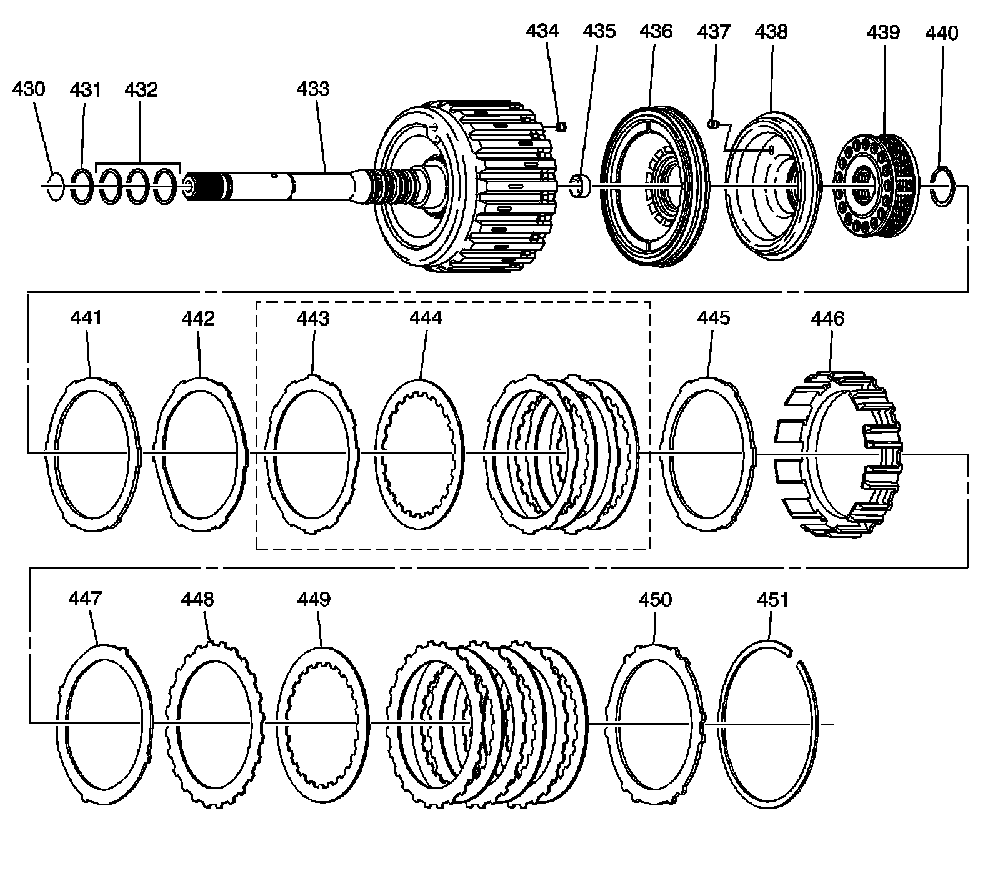
430 - Input Shaft - O-Ring Seal
431 - Input Shaft Fluid Seal Ring
432 - Input Shaft Fluid Seal Ring - 3
433 - Forward Clutch - W/Input Housing Assembly
434 - Forward Clutch Housing Ball Check Valve Assembly
435 - Forward Clutch Bushing
436 - Forward Clutch Piston Assembly
437 - Coast Clutch Piston Ball Check Valve Assembly
438 - Coast Clutch Piston Assembly
439 - Forward and Coast Clutch Spring
440 - Forward and Coast Clutch Spring Retainer Ring
441 - Coast Clutch Spacer Plate - Selective
442 - Coast Clutch Apply Plate
443 - Coast Clutch Plate Assembly - Outer Spline - 3
444 - Coast Clutch Plate Assembly - Inner Spline - 3
445 - Coast Clutch Backing Plate
446 - Coast Clutch Housing
447 - Forward Clutch Apply Plate
448 - Forward Clutch Plate Assembly - Outer Spline - 4
449 - Forward Clutch Plate Assembly - Inner Spline - 4
450 - Forward Clutch Backing Plate
451 - Forward Clutch Backing Plate Retainer Ring - Selective
Input Sun Gear Shaft and Forward Sprag Clutch Assembly
Input Sun Gear Shaft and Forward Sprag Clutch Assembly:
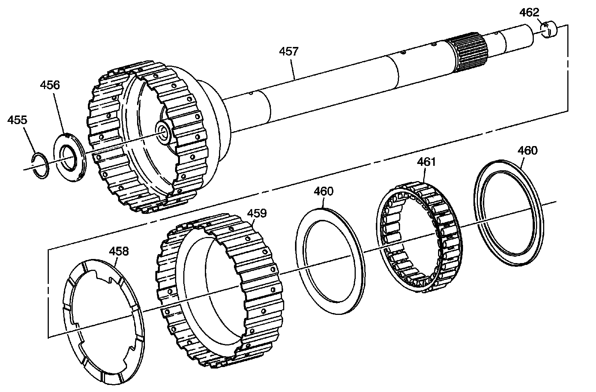
455 - Forward Clutch Roller Inner Race Thrust Ring
456 - Forward Clutch Roller Inner Bearing
457 - Input Sun Gear Shaft Assembly
458 - Forward Clutch Roller Outer Race Washer
459 - Forward Clutch Sprag Outer Race
460 - Forward Clutch Sprag Assembly Retainer Rings - 2
460 - Forward Clutch Sprag Assembly Retainer Rings - 2
461 - Forward Clutch Sprag Assembly
462 - Orificed Cup Plug - Lube
Direct Clutch Drum and Shaft Assembly
Direct Clutch Drum and Shaft Assembly:
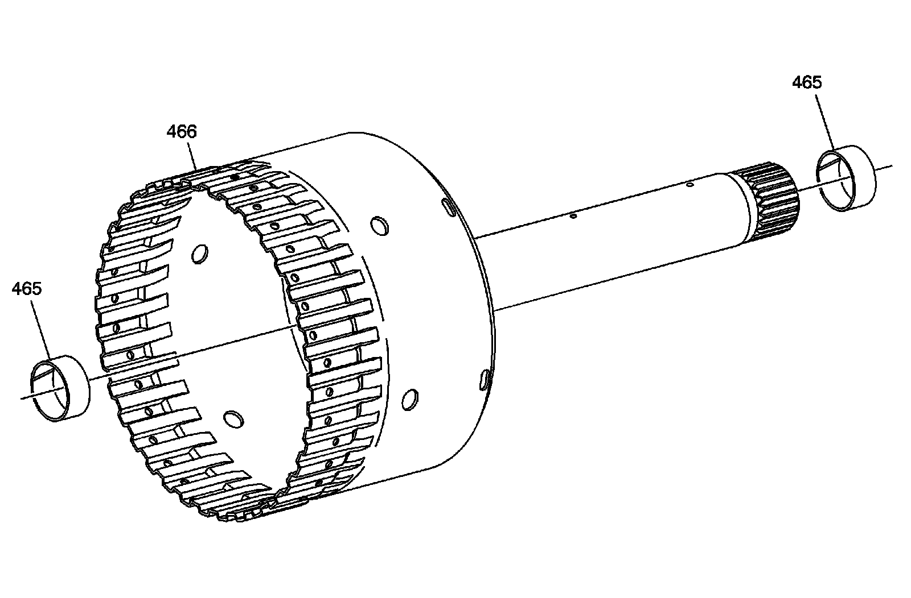
465 - Input and Reaction Carrier Bushing - 2
465 - Input and Reaction Carrier Bushing - 2
466 - Direct Clutch Drum
Intermediate Sprag Clutch Assembly
Intermediate Sprag Clutch Assembly:
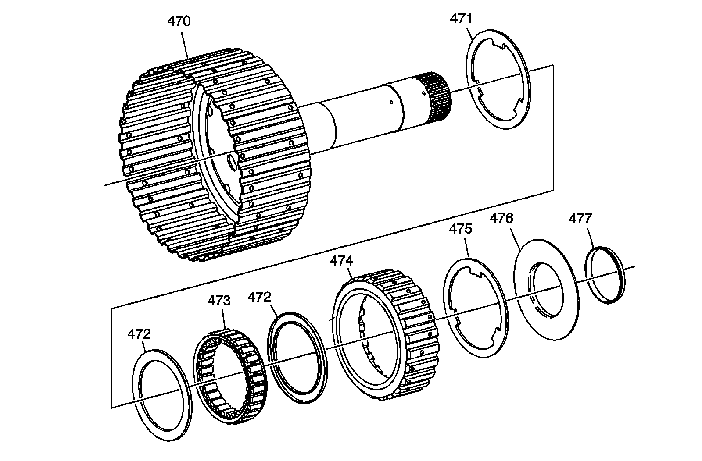
470 - Overdrive and Reverse Clutch - W/Hub Assembly
471 - Intermediate Clutch Roller Thrust Washer
472 - Intermediate Clutch Sprag Assembly Retainer Rings - 2
472 - Intermediate Clutch Sprag Assembly Retainer Rings - 2
473 - Intermediate Clutch Sprag Assembly
474 - Intermediate Clutch Sprag Outer Race
475 - Intermediate Clutch Roller Thrust Washer
476 - Intermediate Clutch Roller Thrust Bearing Assembly
477 - Intermediate Clutch Roller Thrust Bearing Assembly Retainer
Overdrive and Intermediate Clutch Assembly
Overdrive and Intermediate Clutch Assembly:
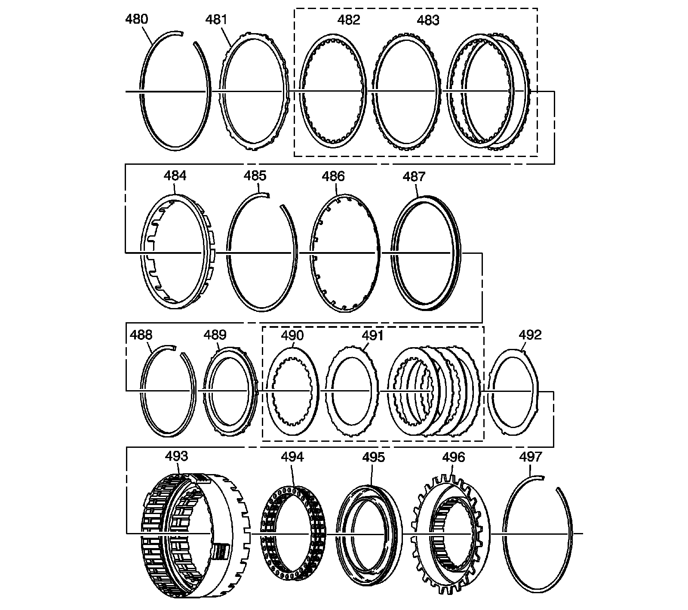
480 - Overdrive Clutch Backing Plate Retainer Ring - Selective
481 - Overdrive Clutch Backing Plate
482 - Overdrive Clutch Plate Assembly - Inner Spline
483 - Overdrive Clutch Plate Assembly - Outer Spline
484 - Overdrive Clutch Spacer
485 - Overdrive Clutch Spring Retainer Ring
486 - Overdrive Clutch Piston Spring
487 - Overdrive Clutch Piston Assembly
488 - Intermediate Clutch Backing Plate Retainer Ring - Selective
489 - Intermediate Clutch Backing Plate
490 - Intermediate Clutch Plate Assembly - Inner Spline - 3
491 - Intermediate Clutch Plate Assembly - Outer Spline - 3
492 - Intermediate Clutch Apply Plate
493 - Overdrive Clutch Housing
494 - Intermediate Clutch Spring
495 - Intermediate Clutch Piston Assembly
496 - Intermediate Clutch Housing
497 - Intermediate Clutch Housing Retainer Ring
Low Clutch Sprag Assembly
Low Clutch Sprag Assembly:
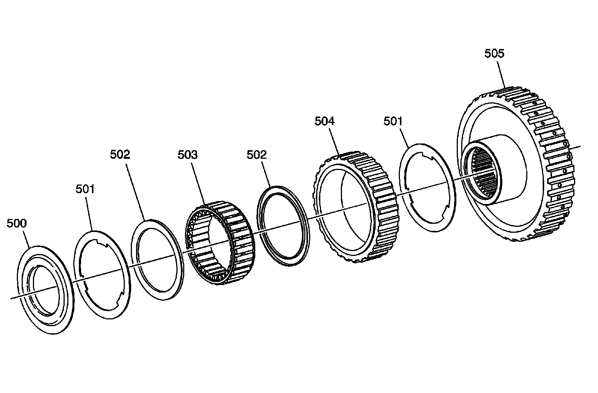
500 - Low Clutch Roller Retainer
501 - Low Clutch Roller Thrust Washer
501 - Low Clutch Roller Thrust Washer
502 - Low Clutch Sprag Assembly Retainer Rings - 2
502 - Low Clutch Sprag Assembly Retainer Rings - 2
503 - Low Clutch Sprag Assembly
504 - Low Clutch Sprag Outer Race
505 - Low Clutch Sprag Inner Race
Center Support Assembly
Center Support Assembly:
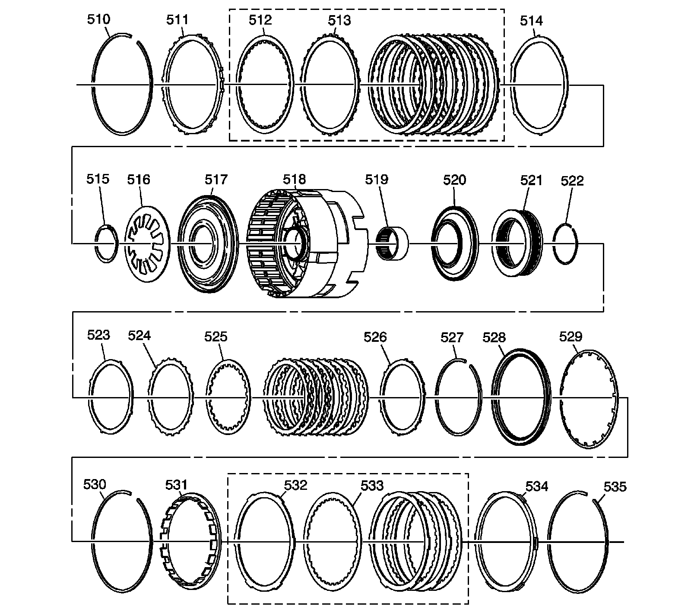
510 - Low and Reverse Clutch Plate Retainer Ring - Selective
511 - Low and Reverse Clutch Backing Plate
512 - Low and Reverse Clutch Plate Assembly - Inner Spline - 5
513 - Low and Reverse Clutch Plate Assembly - Outer Spline - 5
514 - Low and Reverse Clutch Apply Plate
515 - Low and Reverse Clutch Spring Retainer Ring
516 - Low and Reverse Clutch Spring
517 - Low and Reverse Clutch Piston
518 - Center Support
519 - Input and Reaction Bearing Assembly
520 - 2nd Clutch Piston
521 - 2nd Clutch Spring
522 - 2nd Clutch Spring Retainer Ring
523 - 2nd Clutch Apply Plate
524 - 2nd Clutch Plate Assembly - Outer Spline - 5
525 - 2nd Clutch Plate Assembly - Inner Spline - 5
526 - 2nd Clutch Backing Plate
527 - 2nd Clutch Backing Plate Retainer Ring - Selective
528 - 2nd Coast Clutch Piston Assembly
529 - 2nd Coast Clutch Spring
530 - 2nd Coast Clutch Spring Retainer Ring
531 - 2nd Coast Clutch Spacer
532 - 2nd Coast Clutch Plate Assembly - Outer Spline - 3
533 - 2nd Coast Clutch Plate Assembly - Inner Spline - 3
534 - 2nd Coast Clutch Backing Plate
535 - 2nd Coast Clutch Plate -Backing Plate -Retainer Ring -Selective
Planetary Carrier Assembly
Planetary Carrier Assembly:
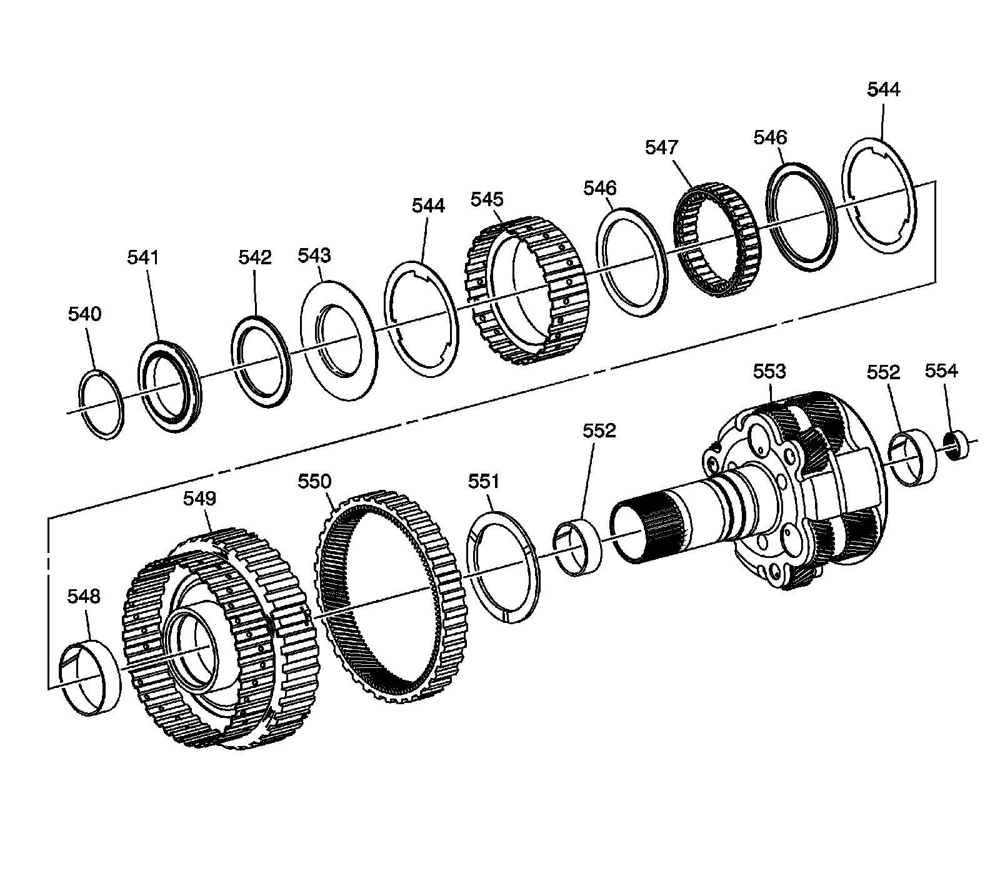
540 - Input and Reaction Carrier Outer Retainer Ring
541 - Input and Reaction Bearing Assembly
542 - 2nd Clutch Roller Inner Race Bearing Assembly
543 - 2nd Clutch Sprag Retainer
544 - 2nd Clutch Roller Outer Race Washer
544 - 2nd Clutch Roller Outer Race Washer
545 - 2nd Clutch Sprag Outer Race
546 - 2nd Clutch Sprag Assembly Retainer - 2
546 - 2nd Clutch Sprag Assembly Retainer - 2
547 - 2nd Clutch Sprag Assembly
548 - Input and Reaction Carrier Bushing
549 - 2nd Clutch Sprag Inner Race
550 - Reaction Internal Gear
551 - Reaction Internal Gear Flange Washer
552 - Reaction Carrier Bushing - 2
552 - Reaction Carrier Bushing - 2
553 - Input and Reaction Carrier
554 - Input and Reaction Bearing Assembly
Rear Internal Gear Output Shaft Assembly
Rear Internal Gear Output Shaft Assembly:
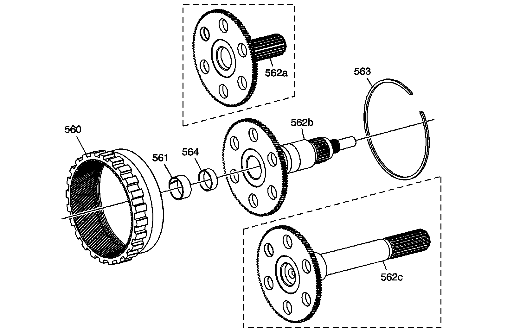
560 - Rear Internal Gear
561 - Input and Reaction Carrier Bushing
562a - Output Shaft Assembly - Model Dependent
562b - Output Shaft Assembly - Model Dependent
562c - Output Shaft Assembly - Model Dependent
563 - Rear Internal Retainer Ring
564 - Cup Plug
Park Pawl Assembly
Park Pawl Assembly:
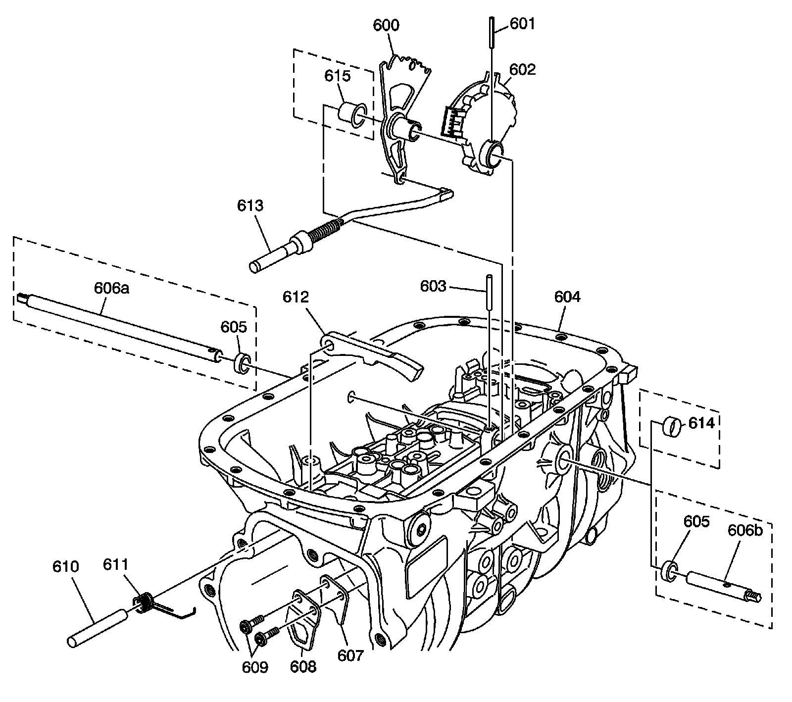
600 - Manual Shaft Detent Lever
601 - Manual Shaft Detent Lever Pin
602 - Transmission Manual Shift Shaft Switch Assembly
603 - Manual Shaft Detent Lever Pin
604 - Transmission Case
605 - Manual Shift Shaft Seal - Model Dependent
605 - Manual Shift Shaft Seal - Model Dependent
606a - Manual Shift Shaft - 2WD - Model Dependent
606b - Manual Shift Shaft - AWD - Model Dependent
607 - Park Pawl Actuator Bracket
608 - Park Pawl Actuator Bracket
609 - Park Pawl Actuator Bracket Bolt M8 x 1.25 x 25 - 2
610 - Park Pawl Shaft
611 - Park Pawl Spring
612 - Park Pawl
613 - Park Pawl Actuator Assembly
614 - Cup Plug - Model Dependent
615 - Transmission Manual Shift Shaft Spacer - Model Dependent